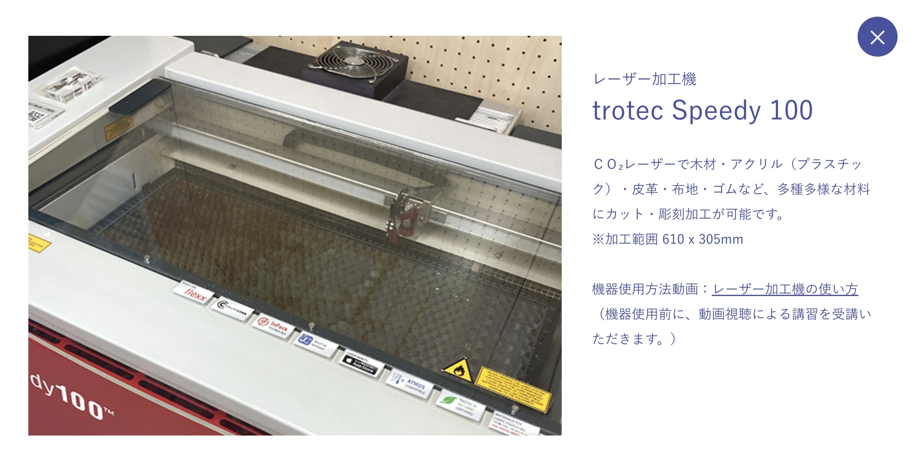

第4回 Design for Others
持ち歩きしやすいマタニティーマーク
私たちの班は個人で作業をすることにしました。
私は、どんなファッションの人でも持ち歩きやすく、絶対に忘れずに持ち歩くことができる 【マタニティーマーク】 を作成することにしました。
周りのママたちに「マタニティーマーク」について聞いてみると、、、
良くも悪くも目立ちすぎることが多かったり、バッグの素材や種類によって色があまり合わず目立ちすぎたり目立たなすぎたり、
出掛ける日の気分によってバッグを変える時に付け替えるのを忘れて出掛けてしまいそうになるという話を聞くことができました。
なので、日頃持ち歩く習慣があり、変える機会が少なく、ファッションによって持ち歩きずらいこともない部分に
「マタニティーマーク」を取り入れることができればと思い、
スマホケースにはめて使うマタニティーマーク
を作ろうと考えました。製品使用中の写真


説明
作る上でマタニティーマークは板をレーザーカッターで加工して作成し、100均などに売っているクリアスマホケースに作成したマタニティーマークと
同じ大きさ(直径５cm)の穴を開けてはめ込むことができるようなスマホケースを作りたいと考えていました。
しかし、今回の提出期限までにスマホケースを準備して穴を開けることが難しかったので、今回はマタニティーマークを
ソフトタイプのスマホケースになら挟みやすい厚さの2.5mmの板で作ることにしました。
今回はマタニティーマークを直径５cmで作ったので、後からスマホケースに直径５cmの穴を開ければ作りたかったものができるので
使用機材
レーザーカッター
同じ班のメンバーのDesign for Othersのページへのリンク
ツナさんのページかさしょーさんのページ
ニックネームがわからない方は未掲載です。